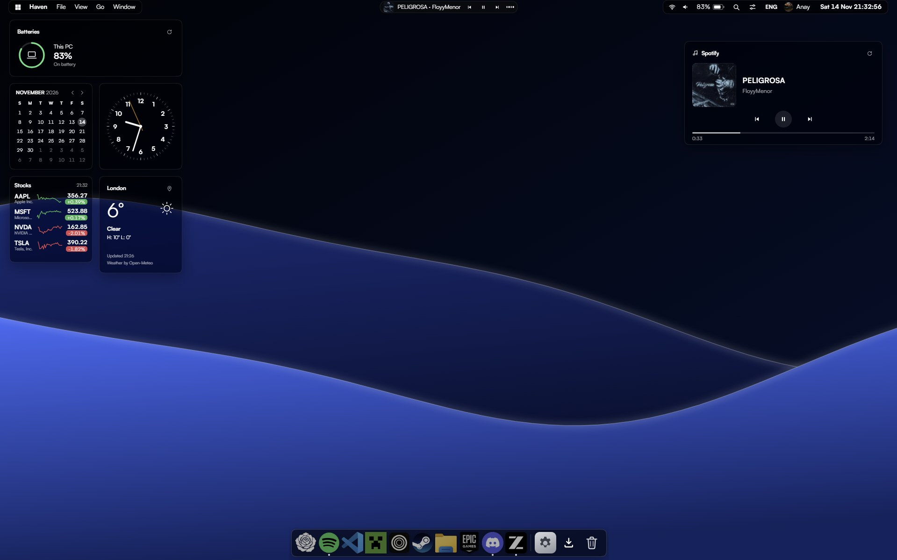
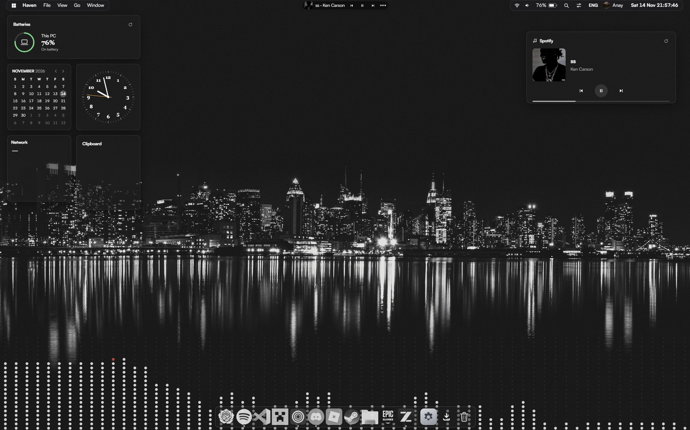
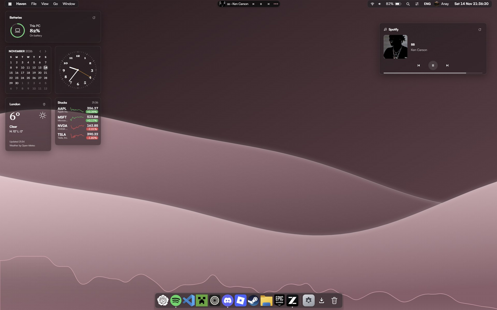
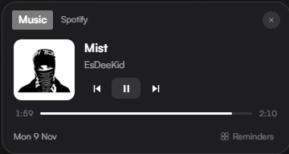
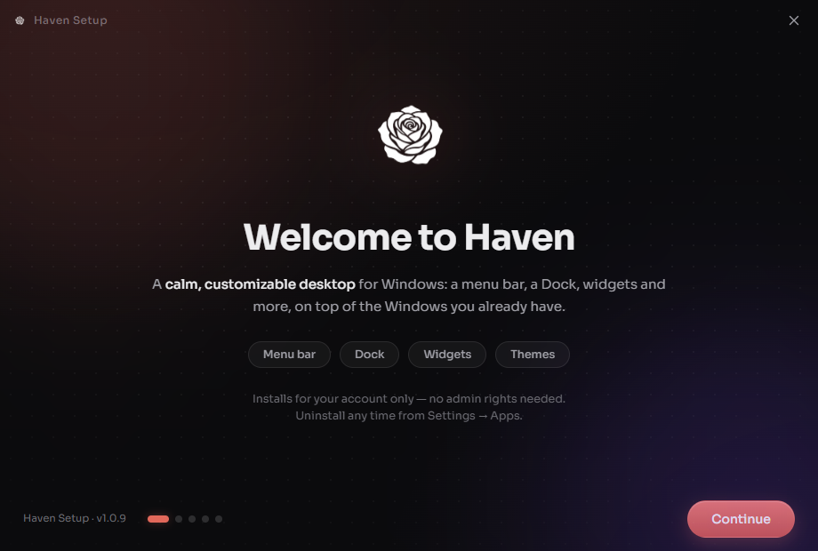
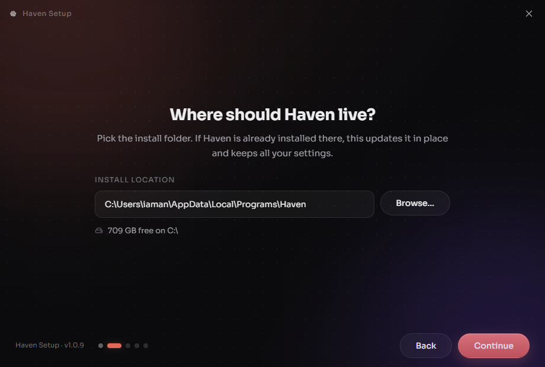
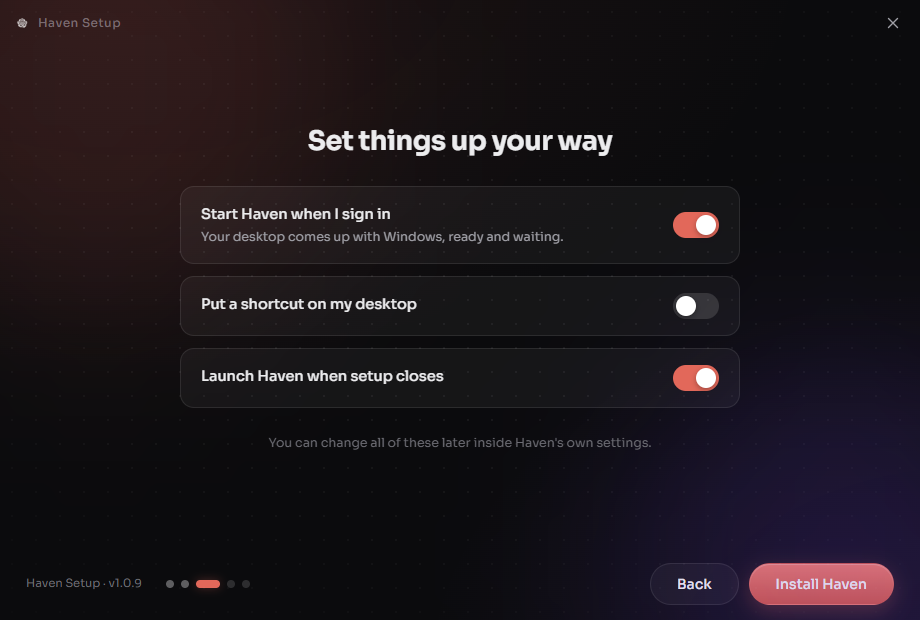
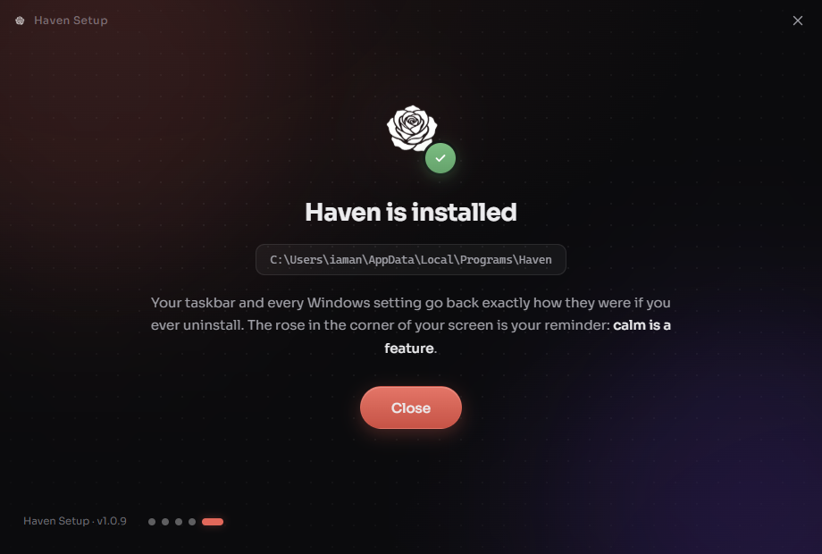

a dock, with manners
magnifies under your cursor, shows what's already running, tucks away when a window needs the room. bottom, left or right — your call.
a quiet menu bar. a dock that feels like home. widgets only where you want them. your apps, files and games stay exactly as they are — everything around them softens.



magnifies under your cursor, shows what's already running, tucks away when a window needs the room. bottom, left or right — your call.
the front app's real menus, status icons, a proper clock. split it into floating islands if that's more your speed.
an instant strip with real icons, no flicker — and when you let go of alt, your keyboard still works. we test the small things.
the rest wait in the gallery until you want them. move them anywhere, resize for real, tint, lock, ignore — it's your desk.
spotify, youtube, anything windows hears — one small pill, click for the full panel. right-click to change its shape.

four shapes. zero pop-ups. the panel only appears when you ask.
twenty-six themes out of the box, and a style studio for everything else: fonts, corners, glass, motion, accents — even a theme code you can send to a friend.
light: sunrise over still water. dark: 2 am, the city off. these are real setups, not renders.
when an app covers the desktop, the desktop sleeps — live wallpapers pause, widgets stop drawing, your gpu gets its afternoon back.
light on the machine. measured, not promised: as little as ~30 MB of memory and 0.1% CPU while idling on a live Windows 11 machine — task manager screenshot, not a marketing number. a thin layer over native windows; quiet when idle, invisible during games.
private by default. everything runs on your pc. no account, no telemetry, no cloud. weather is one small, city-only request.
leaves nicely. every change is tracked and reversed — on exit, on uninstall, even on a crash, thanks to a watchdog whose only job is putting your taskbar back.
this is the actual setup — no dark patterns, no bundles, no account. pick a folder, tick two boxes, watch it bloom.




4E70B9C211DDDB90B83EFBF46784CE426BE1B447F639ECA5B6E49329EA9749D0